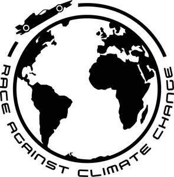

Trade Mark Journal No.2025/044 31 October 2025
UK00004260894 8 September 2025 (16,25,38,41,42)

- Class 16
- Paper and cardboard; printed matter; bookbinding material; photographs; stationery and office requisites, except furniture; adhesives for stationery or household purposes; artists' and drawing materials; paintbrushes; instructional and teaching materials; plastic sheets, films and bags for wrapping and packaging; printers' type, printing blocks; bags [envelopes, pouches] of paper or plastics, for packaging; carrier bags; paper bags; gift bags; banners of paper; booklets; books; calendars; cardboard; cards; cardboard tubes; catalogues; comic books; face towels of paper; graphic prints; graphic representations; greeting cards; labels of paper or cardboard; money clips; musical greeting cards; newsletters; newspapers; note books; pamphlets; pen cases; pen clips; penholders; periodicals; photo albums; photo-engravings; photographs [printed]; photograph stands; pictures; portraits; postage stamps; postcards; posters; printed coupons; printed publications; printed educational materials; educational publications; educational books; three dimensional models for educational purposes; teaching materials [except apparatus]; writing instruments; writing or drawing books; printed programmes; events programmes; printed event admission tickets; Printed paper signs featuring names for use for special events; souvenir programmes; parts and fittings for all the aforesaid goods.
- Class 25
- Clothing, footwear, headgear; belts [clothing]; boots; caps [headwear]; hats; clothing of leather; gloves [clothing]; neckties; outerclothing; ready-made linings [parts of clothing]; tee-shirts; trousers; underwear; tights; sweaters; sports jerseys; paper clothing; sportswear; sports footwear; vests; women’s outerclothing; women’s underclothing; children’s clothing; parts and fittings for all the aforesaid goods.
- Class 38
- Telecommunications; broadcasting services; television broadcasting; satellite broadcasting; satellite broadcasting services relating to sporting events; radio broadcasting; wireless broadcasting; internet broadcasting services; providing access to internet forums; streaming of television over the internet; video-on-demand transmission; digital transmission of data via the internet; communications by cellular phones; communications by computer terminals; communications by fiber optic networks; computer aided transmission of messages and images; news agency services; streaming of data; videoconferencing services; teleconferencing services; provision of access to an electronic marketplace [portal] on computer networks; provision of telecommunication facilities for educational purposes; information and advisory services relating to all of the aforesaid provided over a telecommunications network.
- Class 41
- Education; providing of training; entertainment; sporting and cultural activities; academies [education]; arranging and conducting of conferences; arranging and conducting of in-person educational forums; arranging and conducting of seminars; arranging and conducting of workshops [training]; club services [entertainment or education]; conducting fitness classes; education information; health club services [health and fitness training]; on-line publication of electronic books and journals; practical training [demonstration]; providing on-line electronic publications, not downloadable; teaching; services for arranging teaching programmes; production of television programmes; television entertainment; training services provided via simulators; writing of texts; adult education services relating to environmental issues; education services relating to conservation of the environment; education and training relating to nature conservation and the environment; organising of sporting activities and of sporting competitions; provision of sporting facilities; cultural and sporting activities; production of sporting events for film; provision of information relating to sporting events; entertainment services in the nature of sporting events; organising of sporting, leisure and entertainment events; organising of sporting, leisure and entertainment events; organising of sporting, leisure and entertainment events relating to charitable fund raising and promotion; organisation of events for cultural, entertainment and sporting purposes; providing facilities for sporting events, sports and athletic competitions and awards programmes; preparation of entertainment programmes for broadcasting; training courses in strategic planning relating to advertising, promotion, marketing and business; education services relating to travel and tourism, media and telecoms, music and entertainment, finance and money, health and wellbeing, leisure and lifestyle, social and environment issues; organisation of automobile races; entertainment services provided at a race track; entertainment in the nature of automobile races; training services in relation to Formula E; training services in relation to electric motor vehicles; information, advisory and consultancy services in relation to the aforesaid; information and advisory services relating to the aforesaid services provided on-line from a computer database or the Internet; information and advisory services in relation to the aforesaid services provided over a telecommunications network.
- Class 42
- Scientific and technological services and research and design relating thereto; industrial analysis and research services; design and development of computer hardware and software; IT services; computer programming services; services of a programmer; recovery of computer data; consultancy in the field of computer hardware; computer programming; duplication of computer programs; computer rental; computer software design; installation of computer software; maintenance of computer software; updating of computer software; rental of computer software; rental of computer hardware; computer system design; computer systems analysis; consultancy in the field of computer software; conversion of data or documents from physical to electronic media; creating and maintaining websites for others; data conversion of computer programs and data (not physical conversion); hosting computer sites (web sites); services of engineers; expert advice and expert opinion relating to technology; rental of data processing apparatus and computers; technical services relating to projection and planning of equipment for telecommunications; services of information brokers and providers, namely product research for others; weather forecasting; research in the field of telecommunication technology; monitoring of network systems in the field of telecommunications; technical support services relating to telecommunications and apparatus; search engine services; publishing of computer game software and video games software; advisory services relating to environmental protection; compilation of environmental information; compilation of information relating to environmental conditions; environmental surveys; environmental protection (Research in the field of -); research in the field of energy; professional consultancy relating to the conservation of energy providing advice on environment-related issues; development of programs and campaigns to the public regarding environmental and conservation issues; encouragement of innovation and highlighting information on best methods for reduction of waste and for re-use of products; environmental monitoring services; environmental support services for providing technical advice relating to sustainable development, cost reduction and savings in material and energy consumption, storage, transport and packaging; environmental consultancy services provided to businesses relating to benchmarking, accreditation and verification of performance; accreditation and consultancy services relating to environmental issues and compliance with environmental requirements; certification, preparation and examination of quality requirements and standards relating to environmental issues and compliance with environmental requirements; investigation, search and enquiry services relating to the environment; information services relating to all the aforesaid services; provision of all the aforesaid services via a computerised self-assessment process; provision of all the aforesaid services via the Internet; provision of all the aforesaid services to members of an organisation; electrical engineering services; electrical safety research; designing of electrical systems; design of electric circuit boards; engineering services in the field of electrical power and natural gas production; information and advisory services relating to all of the aforesaid; information and advisory services relating to all of the aforesaid provided online from a computer database or from the internet; information and advisory services relating to all of the aforesaid provided over a telecommunications network.
Envision Racing Limited
Representative: Stobbs